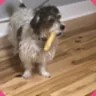
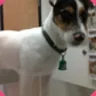
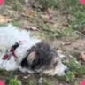
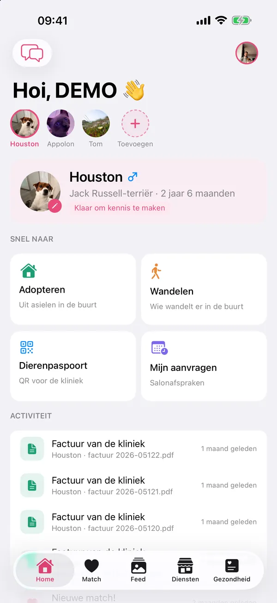
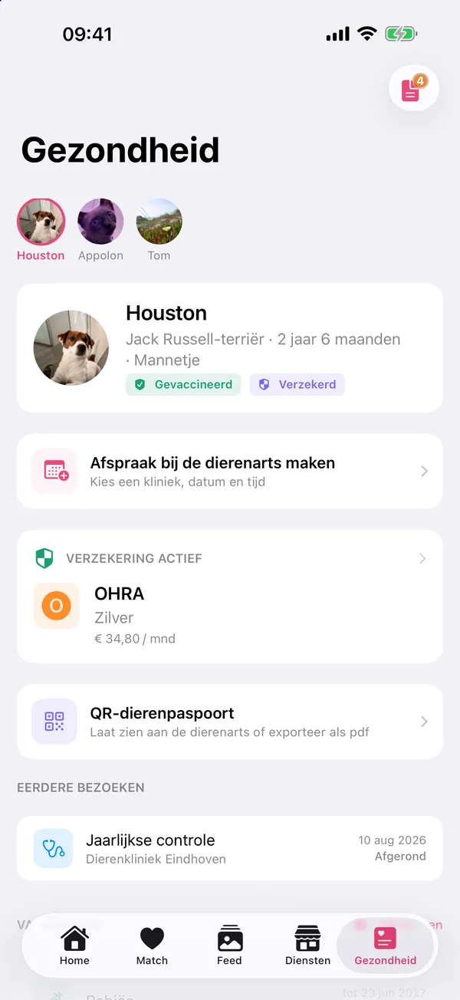
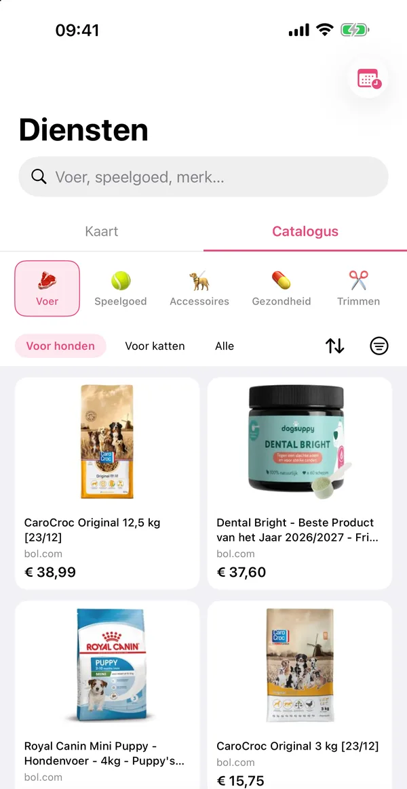
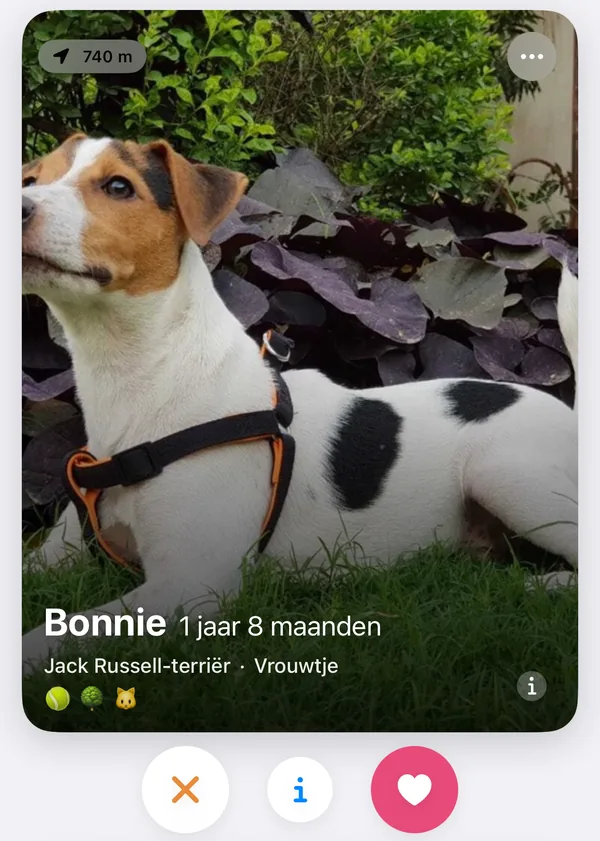
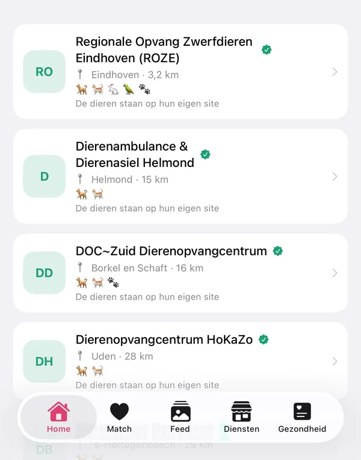

Het hele leven van je huisdier, in je broekzak
Gezondheid en papieren, buren en maatjes, asielen en trimsalons om de hoek, en voer en speelgoed bestellen. Alles rond je hond of kat, in één app.
Laat het me weten bij de lancering
De bèta is nu besloten: we testen met een kleine groep baasjes. Laat je e-mailadres achter, dan hoor je het als hij opengaat of als PaWow in de App Store staat.
Alleen je e-mailadres en taal. Geen trackers.
Een dinsdag met Houston en Appolon
Een voorbeelddag: dinsdag met jack russell Houston en maine coon Appolon. De schermen zijn nagebouwd uit de app.
Buren en maatjes: Ochtendrondje met de buren
Zie welke honden er nu in de buurt wandelen en loop samen een rondje. Je plek deel je alleen als je zelf een wandeling start, en dan afgerond tot een huizenblok.
3 honden wandelen nubinnen 1 kmNu
MollySamojeed400 m
OscarGolden retriever650 m
TobyBeagle900 mGezondheid en papieren: Een seintje voor Appolon
Ontwormen, vaccinaties, medicijnen: PaWow herinnert je op tijd, voor je kat net zo goed als voor je hond.
PaWownuAppolon: ontwormen vandaagTik om af te vinkenPaWow8 minHouston: herhaling Nobivac over 12 dagenPlan een afspraak bij je dierenartsGezondheid en papieren: De dierenarts scant het QR‑paspoort
Vaccinaties, chipnummer en eerdere bezoeken in de browser van de kliniek, zonder app. De link is 7 dagen geldig en je trekt hem in wanneer je wilt.
Dierenpaspoort van HoustonJack Russell-terriër · Reu · Chip •••• 4127Cocktail (DHPPi)geldig tot mrt 2027GeldigKennelhoestgeldig tot jan 2027GeldigLink geldig tot ma 20 okt
Gezondheid en papieren: Van factuur naar declaratie
De kliniek stuurt de factuur via dezelfde link. Jij maakt er een concept-declaratie van voor je verzekeraar, zonder overtypen.
Factuur van de kliniekConsult en vaccinatie · € 86,50Concept-declaratieKlaar om naar je verzekeraar te sturenVerzekerdIn de buurt: Trimsalon, asiel of rasvereniging
Dierenartsen en trimsalons op de kaart, met een aanvraag bij partnersalons. Asielen en rasverenigingen met een link naar hun eigen pagina's, en voer en speelgoed om te bestellen.
Asielenmet een link naar hun eigen site79Rasverenigingenvan de Raad van Beheer56Producten voor huisdierenongeveer, elke 6 uur bijgewerkt775Aanvraag bij een trimsalondo 10:30 · wassen en knippenBevestigdPartnerlinks: koop je via de catalogus, dan betaalt de winkel PaWow een kleine commissie.
Buren en maatjes: Een match voor Houston
Houston en Bonnie vinden elkaar leuk. Nu kunnen de baasjes chatten en een speelafspraak maken.
Wederzijdse matchBonnie · Jack Russell-terriërZin in een rondje in het park morgen?
Graag! 18:00 bij de vijver?
Zo ziet PaWow er echt uit
Echte schermen uit de bèta. Houston en Appolon zijn echte huisdieren; de profielen bij Matchen zijn demoprofielen.





Je gegevens blijven van jou
- Opgeslagen in datacenters in de EU.
- Medische gegevens zie alleen jij, en de dierenarts als jij een QR‑link deelt.
- Anderen zien de locatie van je huisdier alleen afgerond.
- We verkopen je gegevens niet en gebruiken ze niet voor advertenties.
- Account verwijderen? Dan wissen we alles, ook je dieren en berichten.
Hoe PaWow geld verdient
Met partnerlinks, niet met jouw gegevens. Koop je iets via de catalogus, dan krijgt PaWow een kleine commissie van de winkel: bol of Zooplus. Jij betaalt niets extra.
Meer over partnerlinks
- Partnerprogramma van bol PaWow neemt deel aan het partnerprogramma van bol. Producten en prijzen in de catalogus komen van bol, en ‘Kopen’ brengt je naar bol.com. PaWow is een onafhankelijke app en geen onderdeel van bol.
- Zooplus via Awin PaWow neemt via het affiliatenetwerk Awin deel aan het partnerprogramma van Zooplus. ‘Kopen’ bij een Zooplus-product brengt je naar zooplus.nl. PaWow is geen onderdeel van Zooplus of Awin.
- Je koopt bij de winkel We verkopen zelf niets. Bestellen, betalen, bezorgen en retourneren regel je met de winkel, onder hun voorwaarden.
- De winkel is leidend Prijzen werken we meerdere keren per dag bij, maar de prijs op de site van de winkel is altijd leidend.
- Duidelijk gemarkeerd Partnerlinks zijn in de app als zodanig gemarkeerd, en we geven geen persoonsgegevens door aan de winkel.
- Eerlijk advies Onze artikelen schrijven we zelf. Een commissie verandert niets aan wat we aanraden.
Uit de gids
Alle artikelenEen pup in huis: de checklist voor de eerste weken
Welke spullen heb je nodig voordat je pup komt, en wat regel je in de eerste weken? Van bench tot chipregistratie.
Lees verderOp reis met je hond of kat binnen de EU
Chip, rabiësvaccinatie en dierenpaspoort: wat je nodig hebt, hoe lang van tevoren je begint en welke landen extra eisen stellen.
Lees verderUitlaten in Nederland: aanlijnen, opruimen en losloopgebieden
Waar mag je hond los en waar niet? Dat verschilt per gemeente. De belangrijkste regels, plus tips voor warme dagen en donkere avonden.
Lees verderVeelgestelde vragen
Hoe kom ik in de bèta?
De bèta loopt via TestFlight, de app van Apple voor testversies. Op dit moment is hij besloten. Meld je hierboven aan, dan mailen we je zodra je mee kunt doen of zodra PaWow in de App Store staat.
Is er een Android-versie?
Nog niet: PaWow is er voorlopig alleen voor iPhone, met iOS 17 of nieuwer.
In welke talen is de app beschikbaar?
In het Nederlands, Engels en Russisch. Je wisselt in de app zelf.
Voor welke dieren is PaWow?
Voor honden, katten, vogels, konijnen en andere huisdieren. Samen wandelen is er alleen voor honden.
Wie kan de gegevens van mijn huisdier zien?
Naam, ras en foto van je huisdier zien andere gebruikers bij het matchen, in de feed en op de wandelkaart. Medische gegevens, documenten en berichten zie alleen jij, plus degene met wie je chat of een QR‑link deelt.
Verkoopt PaWow zelf producten?
Nee. De catalogus verwijst naar webwinkels als bol en Zooplus; daar bestel en betaal je. Lees hoe partnerlinks werken.
Wees erbij als PaWow opengaat
Eén e-mail als de bèta opengaat of PaWow in de App Store staat. Meer niet.
Alleen je e-mailadres en taal. Geen trackers.